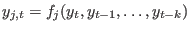
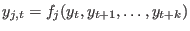
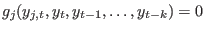
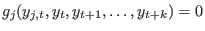
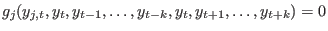

| [ < ] | [ > ] | [ << ] | [ Up ] | [ >> ] | [Top] | [Contents] | [Index] | [ ? ] |
Description
Computes the eigenvalues of the model linearized around the values
specified by the last initval, endval or steady
statement. Generally, the eigenvalues are only meaningful if the
linearization is done around a steady state of the model. It is a
device for local analysis in the neighborhood of this steady state.
A necessary condition for the uniqueness of a stable equilibrium in the neighborhood of the steady state is that there are as many eigenvalues larger than one in modulus as there are forward looking variables in the system. An additional rank condition requires that the square submatrix of the right Schur vectors corresponding to the forward looking variables (jumpers) and to the explosive eigenvalues must have full rank.
Options
solve_algo = INTEGERSee solve_algo, for the possible values and their meaning.
Output
check returns the eigenvalues in the global variable
oo_.dr.eigval.
Contains the eigenvalues of the model, as computed by the check
command.
Description
This command provides information about:
This command can only be used in conjunction with the block
option of the model block.
There are five different types of blocks depending on the simulation method used:
In this case the block contains only equations where endogenous variable attributed to the equation appears currently on the left hand side and where no forward looking endogenous variables appear. The block has the form: .
The block contains only equations where endogenous variable attributed to the equation appears currently on the left hand side and where no backward looking endogenous variables appear. The block has the form: .
The block contains only equations where endogenous variable attributed to the equation does not appear currently on the left hand side and where no forward looking endogenous variables appear. The block has the form: . x is equal to ‘SIMPLE’ if the block has only one equation. If several equation appears in the block, x is equal to ‘COMPLETE’.
The block contains only equations where endogenous variable attributed to the equation does not appear currently on the left hand side and where no backward looking endogenous variables appear. The block has the form: . x is equal to ‘SIMPLE’ if the block has only one equation. If several equation appears in the block, x is equal to ‘COMPLETE’.
The block contains equations depending on both forward and backward variables. The block looks like: . x is equal to ‘SIMPLE’ if the block has only one equation. If several equation appears in the block, x is equal to ‘COMPLETE’.
Prints the equations and the Jacobian matrix of the dynamic model
stored in the bytecode binary format file. Can only be used in
conjunction with the bytecode option of the model block.
Prints the equations and the Jacobian matrix of the static model
stored in the bytecode binary format file. Can only be used in
conjunction with the bytecode option of the model block.
| [ < ] | [ > ] | [ << ] | [ Up ] | [ >> ] |
This document was generated by Sébastien Villemot on May 24, 2011 using texi2html 1.82.